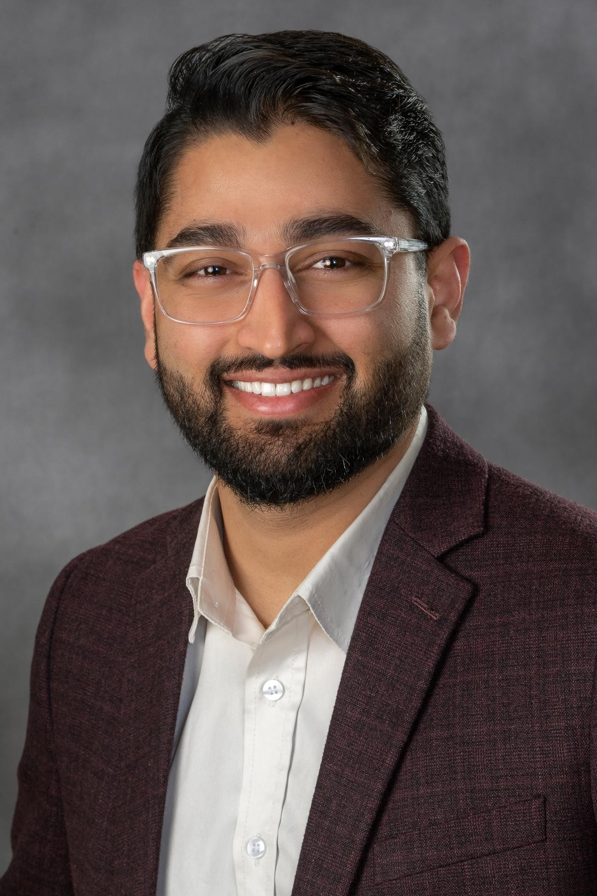

Leniency Program and Whistleblowing
Brink, A. G., and Paudel, P. · Accounting Research Roundtable Gathering, East Carolina University · April 10, 2026
I am a Ph.D. student in Accounting at Virginia Commonwealth University and a Chartered Accountant. My interests include financial reporting, earnings management, research and development, and artificial intelligence.
SEE FULL BIO
ABOUT ME
I am pursuing a Ph.D. in Business with a concentration in Accounting at Virginia Commonwealth University, with an expected completion in May 2028. Before entering academia, I worked in accounting, audit, and finance leadership in Nepal.
My professional experience includes leading an SAP ERP migration, financial reporting and budgeting, financial institution risk assessments, and audits of internationally funded projects.
Virginia Commonwealth University
Ph.D. in Business, Accounting concentration
2024–2028 (expected)
Tribhuvan University
Bachelor’s in Business Studies · 2021
Chartered Accountant (active)
Institute of Chartered Accountants of Nepal
ACADEMIC WORK
My research interests include earnings management, research and development, and artificial intelligence. My primary research method is archival.
Brink, A. G., and Paudel, P. · Accounting Research Roundtable Gathering, East Carolina University · April 10, 2026
Paudel, P. · AAA/Deloitte/Michael J. Cook Doctoral Consortium · June 2026
Data acquisition · Zhou, M., Hansen, T., and Paudel, P.
CAREER
Hulas Khadya Udhyog Pvt. Ltd. · Kathmandu, Nepal
Led the transition to SAP ERP, developed charts of accounts, prepared financial statements, implemented internal controls, and managed cost analysis and budgeting.
Adarsha & Associates, CA and Pradhan & Shakya Associates, CA · Nepal
Led the Nepal stock exchange data migration audit, assessed financial institution risks, supported NFRS adoption, and audited internationally funded projects and grants.
ENGAGEMENT
VARC, George Mason University · May 2026
AAA Midyear Meeting & FARS Doctoral Consortium · January 2026
VARC/WARS, Washington & Lee University / Georgetown University · May 2026
AAA/Deloitte/Michael J. Cook Doctoral Consortium · June 2026
Resource person for accounting training (SASAJA), taxation training (GIZ), NFRS training (Good Neighbors International Nepal), and COSO framework and compliance training.
Participant in ICAN-organized IT training in 2015 and 2019.
GET IN TOUCH
Virginia Commonwealth University · School of Business
Snead Hall, 301 W. Main Street, Richmond, VA 23284